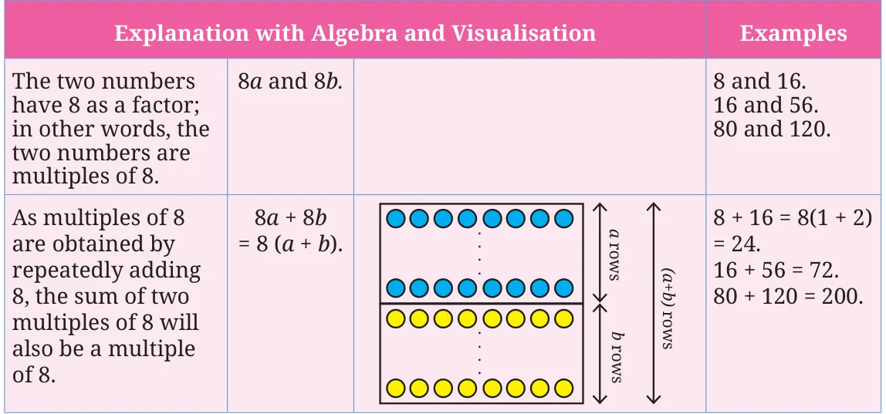
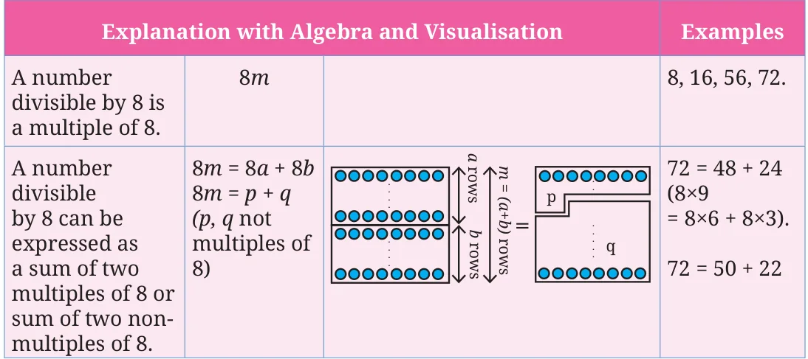
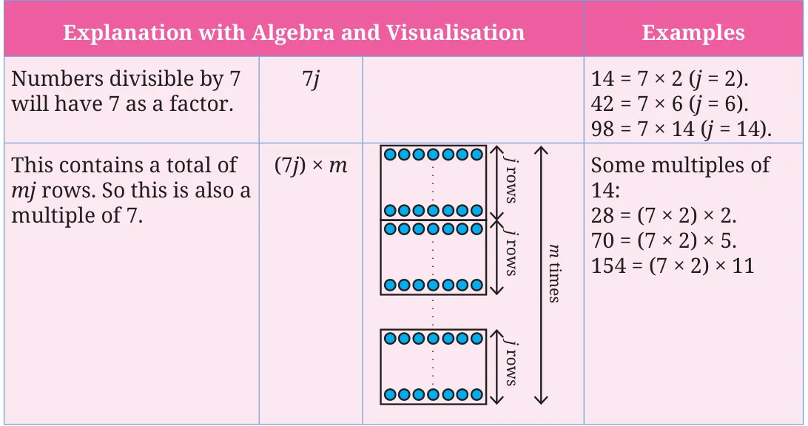
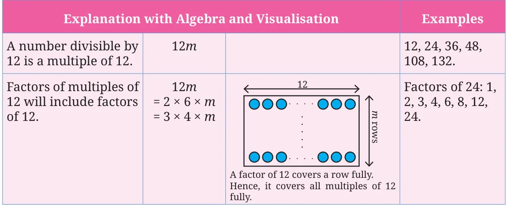
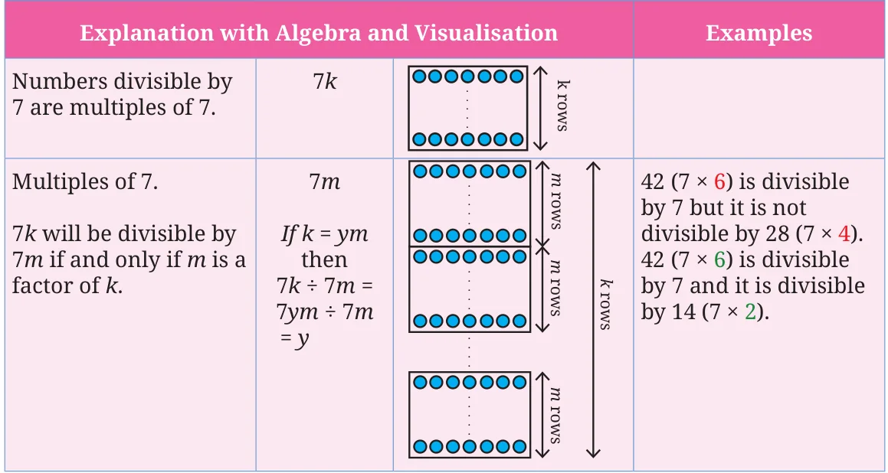
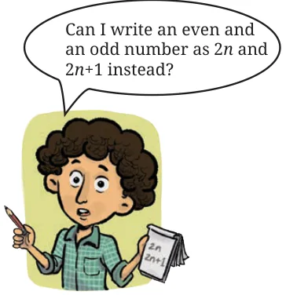

We examine different statements about factors and multiples and determine whether a statement is ‘Always True’, ‘Sometimes True’, or ‘Never True’. We know that the sum of any two multiples of 2 is also a multiple of 2.
- If 8 exactly divides two numbers separately, it must exactly divide their sum.

Statement 1 is always true. Determine if it is true with subtraction.

In general, if a divides M and a divides N, then a divides \(M + N\) and a divides \(M - N\). In other words, if M and N are multiples of a, then \(M + N\) and \(M - N\) will also be multiples of a.
- If a number is divisible by 8, then 8 also divides any two numbers (separately) that add up to the number.

So, statement 2 is sometimes true.
- If a number is divisible by 7, then all multiples of that number will be divisible by 7.

The number \(7jm\) or \((7 \times j \times m)\) has a factor of 7. We can see that Statement 3 is always true.

In general, if A is divisible by k, then all multiples of A are divisible by k.
- If a number is divisible by 12, then the number is also divisible by all the factors of 12.

In general, if A is divisible by k, then A is divisible by all the factors of k. Hence, Statement 4 is always true.
- If a number is divisible by 7, then it is also divisible by any multiple of 7.

We can see that this statement is only sometimes true.
Examine each of the following statements, and determine whether it is ‘Always true’, ‘Sometimes true’, ‘Never true’.
- If a number is divisible by both 9 and 4, it must be divisible by 36.
- If a number is divisible by both 6 and 4, it must be divisible by 24.
In general, if A is divisible by k and A is also divisible by m, then A is divisible by the LCM of k and m. This is because A is a multiple of k and also a multiple of m, so A’s prime factorisation should contain the prime factorisation of LCM(\(k\), \(m\)).
- When you add an odd number to an even number we get a multiple of 6.
We know that multiples of 6 are all even numbers. The sum of an odd number and an even number will be an odd number. Therefore, this statement is never true. We can also explain this algebraically. Suppose,

\((2n) + (2m + 1) = 6j\),
where \(2n\) is an even number, \(2m + 1\) is an odd number, and \(6j\) is a multiple of 6. Then
\(2n + 2m = 6j - 1\)
\(2(n + m) = 6j - 1\)
which means \(2(n + m)\), which is an even number, should be equal to \(6j - 1\), which is an odd number. This is never true.